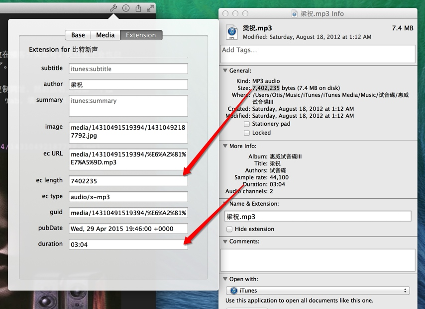
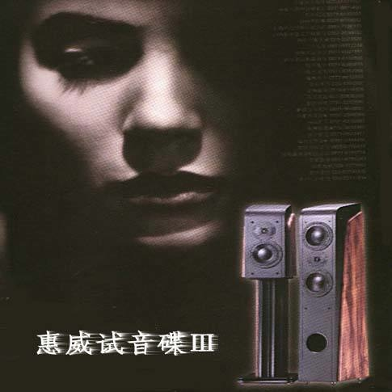

音乐《梁祝》及 MWeb 静态博客功能增强的使用体验
发现可以传普通音频，下面我就传个音频做演示。
方法是直接拖音频到编辑器，复制音频路径，我这里是：media/14310491519394/%E6%A2%81%E7%A5%9D.mp3。也可以点右上角第一个按钮，在 Media 这个 Tab 里点 Copy Path 得到。然后切到 Extension 这个 Tab，填一下资料即可。有些资料可以用右键音频文档，选 Get Info 得到，如右图。

可以到发布新一期播客文章也是非常简单的，只需要填一下 Extension Tab 的相关项目就可以了。唯一比较麻烦一点的是 pubDate 的格式。这个 MWeb 应该是不会增加支持的，所以要自己算了。
另外说一下：Apple 规格的 RSS 输出网址为：http://coderforart.com/bitvoice/podcast-atom.xml。
重要更新： 我上传测试后发现原来 Apple RSS 的格式所填的图片、音频都必须用绝对地址，不能用相对的 media/14310491519394/%E6%A2%81%E7%A5%9D.mp3 这种，要填入 http://coderforart.com/bitvoice/media/14310491519394/%E6%A2%81%E7%A5%9D.mp3 完整才行。
下面的图是梁祝这首歌自带的封面。得到这封面也很简单，在 iTunes 里右键歌曲，选 Get Info 再选 Artwork 这个 Tab，然后选择里面的图片 CMD + C 复制，再切到 MWeb CMD + V 粘贴即可。
